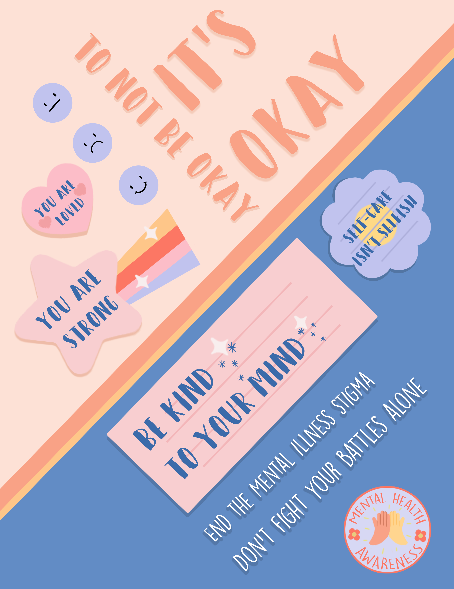

Series of Mental Health Posters

This is a series of 3 posters on bringing awareness on mental health and bringing an end to the stigma. The posters were made in photoshop.
Cafe Website Prototype
This is a website prototype for a fictitious cafe made with Adobe XD and illustrator.
Portrait Poster

This is a self portrait made in photoshop using only symbols and letters.
App Prototype
This is a prototype for an app made to help students find local study spots as well as meet new people. The prototye was made with Figma.
Film Poster
This is a poster for my these film called "Wish Upon A Star". It was made using photoshop and some assets made in Maya.